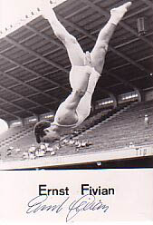

Ernst Fivian (SUI)
1959 and 1961 European V Bronze Medalist

Medal Total
Olympic Games: 1
Silver
European Championships: 1 Gold, 2
Bronze
Ernst was born on August 12, 1931.
Competition Results
1952
Olympic Games: 2nd Team, 55th AA
1956
CSSR-SUI Dual Meet: 2nd Team, 6th AA
1958
SUI-FIN Dual Meet: 1st Team, 11th AA
1959
European Championships: 5th AA, 1st FX, 3rd V, 4th PB
International Meet in Rome: 2nd AA, 1st V, 1st FX, 2nd PB, 2nd HB
SUI Championships: 3rd AA
1960
SUI-ITA Dual Meet: 2nd Team, 1st AA
Olympic Games: 8th Team, 21st AA
1961
European Championships: 33rd AA, 3rd V, 6th FX
SUI Championships: 2nd AA
This page was created on May 20,
2006 and was last updated on September 23, 2019.
© Gymn Forum